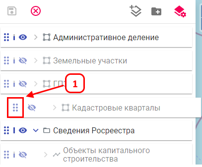
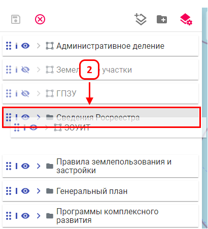
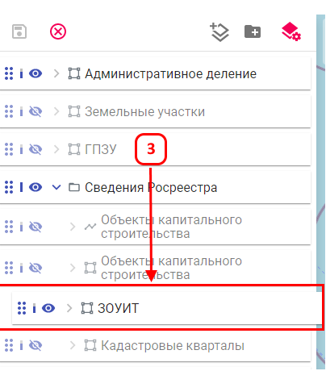

Изменение порядка слоев
Перемещение слоя или группы в списке слоев изменяет порядок их отображения на карте.
Перемещение слоя или группы
Для изменения порядка слоев выполните следующие шаги:



После выполнения действий порядок отображения элементов на карте изменится в соответствии с новым расположением в списке слоев.